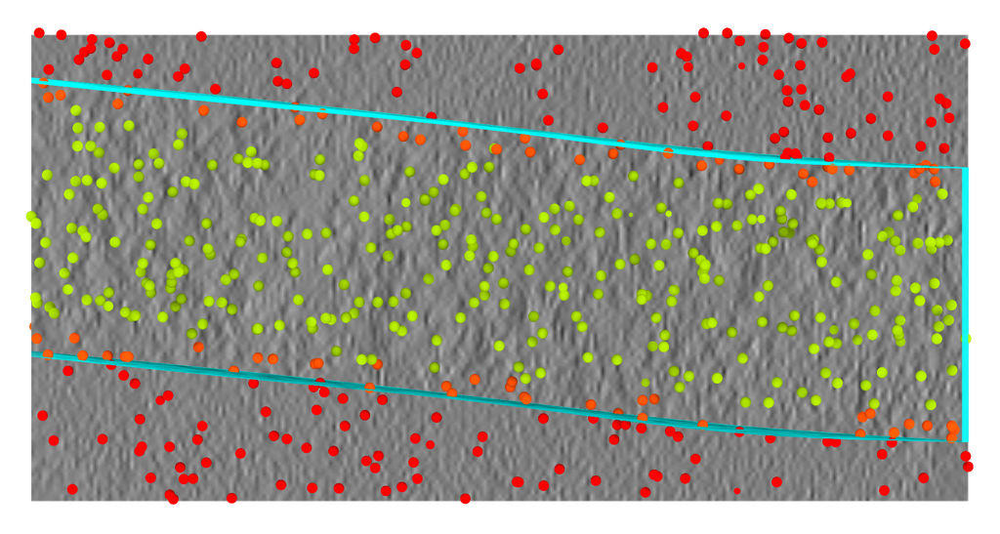
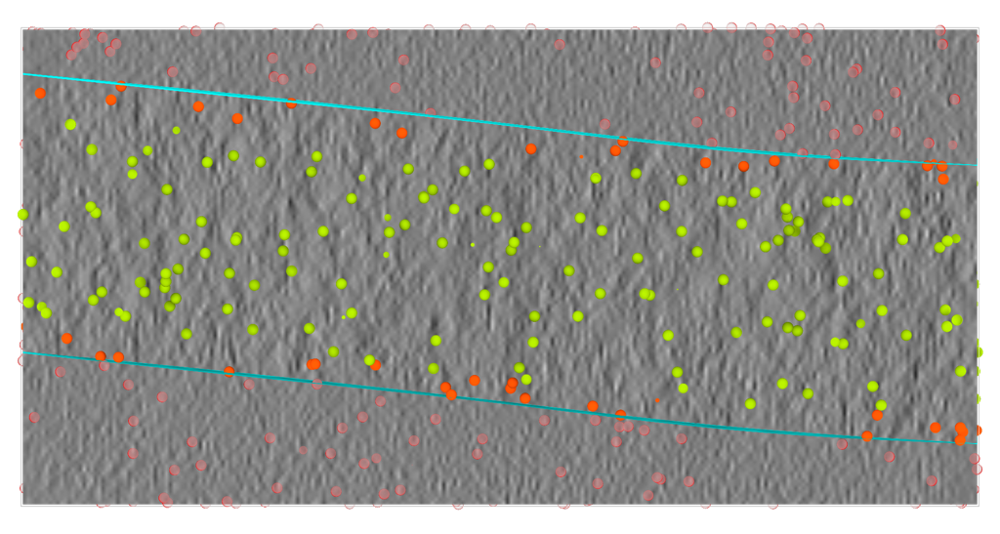

Sample boundaries filtering
Filtering particles by sample boundaries

This tutorial picks up where Detecting Sample Boundaries leaves off. There, we trained an octopi model that predicts the valid sample region of a tomogram and fit a slab mesh to it. Here, we put that boundary to work:
- Inference — run the trained model across a dataset to obtain
segmentationpredictions. - Post-processing — turn each raw prediction into a clean, fitted
valid-sampleboundary mesh. - Particle filtering — use the boundary to select particle picks by where they sit in the specimen, e.g. keeping only particles in the bulk interior, away from the air–water interface near the top and bottom surfaces.
We continue to use the evaluation project config_evaluate.json and tomograms at 7.84 Å (wbp@7.84)
from the previous tutorial.
Units
copick coordinates and distances are always expressed in Ångström (Å). 20 nm = 200 Å.
Step 0: Prerequisites
This tutorial assumes you have completed Detecting Sample Boundaries, which produced everything we build on:
- a trained boundary model (
outputs/model_config.yaml+outputs/best_model_weights.pth); - the evaluation project
config_evaluate.json, with thesample,valid-area, andvalid-sampleobjects defined; - the per-run valid-area box meshes (
valid-area:bob/0), created withcopick process validbox.
For the final, particle-filtering step you additionally need a set of particle picks to filter.
Any pick set works — here we assume a colleague, Alice, has already localized nucleosomes into
nucleosome:alice/0 (for example with octopi or another picking workflow).
The post-processing tools below ship with copick-utils and copick-torch, and inference uses octopi:
Starting from scratch? (inference only)
If you did not follow the previous tutorial — for example you just want to run an already trained model on your own data — you can create the project and the valid-area boxes from scratch with the two snippets below.
1. Set up the copick project
Create an overlay project backed by Data Portal tomograms (swap -ds/--overlay for your
own data source), then add the objects the boundary pipeline uses. An
inference-only project does not need the top-layer/bottom-layer picking objects from
the previous tutorial.
copick config dataportal \
-ds 10302 \
--overlay /home/bob/copick_project_evaluate/ \
--output config_evaluate.json
copick add object -c config_evaluate.json \
--name sample --object-type segmentation --label 102 --color "0,0,255,128"
copick add object -c config_evaluate.json \
--name valid-area --object-type segmentation --label 103 --color "255,255,0,128"
copick add object -c config_evaluate.json \
--name valid-sample --object-type segmentation --label 2 --color "0,255,255,128"
# the particle object that will hold the picks you want to filter (Step 3)
copick add object -c config_evaluate.json \
--name nucleosome --object-type particle --label 1 --color "255,0,0,255" --radius 60
2. Create the valid-area boxes
In most TEMs the tilt axis is not exactly parallel to a detector axis, so tomograms have small
regions of invalid reconstruction at the corners. copick process validbox computes a 3D box
mesh of the valid reconstruction area for every run. Set --angle to your in-plane tilt-axis
rotation (here, -6 degrees):
Step 1: Run inference across the dataset
octopi segment runs the trained model over a tomogram and writes the resulting segmentation back into
the copick project. We reuse the same tomogram URI (-uri) as during training and write the prediction (-suri) to the
segmentation object under user output.
This writes segmentation:output/0@7.84 for each run — a segmentation in which label 2 marks the
predicted valid sample region (label 2 is the valid-sample object from the previous tutorial).
Model ensembles (model soup)
To average several checkpoints, pass comma-separated configs and weights:
-mc a.yaml,b.yaml -mw a.pth,b.pth. This often produces noticeably cleaner boundaries than a
single model.


segmentation:output/0) overlaid on
run 14114. Predictions are blobby and
may contain stray components — Step 2 cleans this up.Step 2: Post-process the prediction into a clean boundary
A raw prediction is rarely a clean slab: it can over- or under-predict and contain stray components. We turn it into a smooth, fitted boundary in two moves — fit a slab to the prediction, then clip it to the valid reconstruction area. This mirrors the ground-truth pipeline from the previous tutorial, but starts from the prediction instead of from manual picks.
Fit a slab to the prediction
copick convert seg2slab extracts a label from the segmentation, keeps its largest connected
component (discarding stray blobs), then fits smooth top and bottom surfaces — the same B-spline
machinery used by picks2slab in the previous tutorial.
Our model predicts a single class (label 2 = valid sample), so we fit it directly:
If your model instead predicts several classes (e.g. 0 = background, 1 = sample,
2 = vacuum), first split out the sample class and keep its largest component, then fit:
# 1. split the multilabel prediction into per-class binary segmentations
copick process split -c config_evaluate.json \
-i "segmentation:output/0@7.84" \
--labels "sample:1,vacuum:2" --output-user-id postproc
# 2. keep only the largest connected component of the sample class
copick process filter-components -c config_evaluate.json \
-i "sample:postproc/0@7.84" \
--keep-largest 1 -o "sample:postproc/largest"
# 3. fit the slab to the cleaned sample
copick convert seg2slab -c config_evaluate.json \
-i "sample:postproc/largest@7.84" \
--label 1 --method coupled \
--grid-resolution 5 5 --regularization 5 \
-o "sample:seg2slab/0"
The --labels "name:value,..." map is needed because the model's output label values (1, 2)
differ from the pickable_objects labels in the config. This also requires a vacuum object in
the config (copick add object --name vacuum --object-type segmentation --label 25).
Match the fit to your training target
Use the same --method and --regularization you used to build the ground-truth slab with
picks2slab. The methods are: spline (two independent surfaces), coupled (one curved surface
with two parallel offsets — a curved but exactly parallel slab), or parallel. Matching the GT
settings keeps predicted and ground-truth boundaries directly comparable.
Clip to the valid reconstruction area
Finally, intersect the fitted slab with the valid-area box from the previous tutorial, so the
boundary respects the valid reconstruction region:
copick logical meshop -c config_evaluate.json \
--operation intersection \
-i "valid-area:bob/0" \
-i "sample:seg2slab/0" \
-o "valid-sample:postproc/0"
The result, valid-sample:postproc/0, is a watertight slab "box" mesh (a curved top, a parallel
bottom, and four side walls) approximating the specimen volume.


valid-sample:postproc/0) for run 14114
— a clean, fitted slab clipped to the valid reconstruction area.Scoring against the ground truth
If you annotated ground-truth boundaries for these runs (valid-sample:meshop/0 from the
previous tutorial), you can measure agreement by rasterizing both meshes onto the same grid
with copick convert mesh2seg and comparing them voxelwise (the voxel F1 score equals the Dice
coefficient):
copick convert mesh2seg -c config_evaluate.json \
-i "valid-sample:meshop/0" --tomo-type wbp -o "valid-sample:gt-seg/0@7.84"
copick convert mesh2seg -c config_evaluate.json \
-i "valid-sample:postproc/0" --tomo-type wbp -o "valid-sample:pred-seg/0@7.84"
Both segmentations are rasterized with the exact watertight ray-caster used to build the training targets, so the comparison is apples-to-apples.
Step 3: Filter particles by position in the specimen
Now we use the boundary to select particles. A common goal is to keep particles inside the specimen but away from the top and bottom surfaces — for instance to exclude particles near the air–water interface, which are often damaged or preferentially oriented.
The subtlety: we want distance to the top/bottom only, not to the lateral side walls of the slab
box. The key tool is copick convert mesh2caps, which extracts only the top and bottom surfaces
("caps") of the slab and discards the side walls.
Extract the slab caps
copick convert mesh2caps -c config_evaluate.json \
-i "valid-sample:postproc/0" \
--surface both \
-o "valid-sample:mesh2caps/0"
We write the caps back under the same valid-sample object, just with a different user/session
(mesh2caps/0), so the box (valid-sample:postproc/0) and the caps (valid-sample:mesh2caps/0) sit
side by side in the viewers.
Output objects must be in your config
The output name (the part before the :) must be one of the pickable_objects in your config —
copick will not write a mesh or pick set to an unregistered object, and the viewers
(ChimeraX-copick, napari-copick) only display artifacts whose object is configured. That's why we
reuse valid-sample here rather than inventing a new valid-sample-caps object. If you do want a
dedicated object for the caps, add it first with
copick add object -c config_evaluate.json --name valid-sample-caps --object-type segmentation --label 3.
Why extract the caps?
clippicks (below) measures distance to the entire reference mesh. If we used the full slab
box, its four side walls would pull in particles near the lateral edges and pollute the
"distance from top/bottom" measurement. mesh2caps removes the walls so distance is measured to
the top/bottom surfaces only.


mesh2caps keeps
the near-horizontal top/bottom surfaces and drops the near-vertical side walls.Select the particles
First, keep only the picks that fall inside the watertight slab, using copick logical picksin:
copick logical picksin -c config_evaluate.json \
-i "nucleosome:alice/0" \
-rm "valid-sample:postproc/0" \
-o "nucleosome:inside/0"
Then, select picks by their distance to the caps with copick logical clippicks. The 200 Å (20 nm)
threshold defines the edge-exclusion zone:
Keep picks beyond 200 Å from the top/bottom — the bulk middle of the specimen:
Mesh voxelization spacing (-mvs)
clippicks rasterizes the reference mesh at -mvs Å to build its distance field. Use 20–40 Å
for large slabs; a fine -mvs 10 over a big, thin slab is slow and memory-hungry.
The result, nucleosome:interior/0, contains the picks inside the specimen and away from the
top/bottom edges.

nucleosome:alice/0) split into kept interior picks
(nucleosome:interior/0, highlighted) and discarded near-surface picks. The caps define the
edge-exclusion zone.mesh2caps options
--surface {both,top,bottom}— extract both caps, or just the top or bottom (e.g. to measure distance to one surface only).--angle-threshold— maximum angle (degrees) between a face normal and the slab axis for a face to count as a cap rather than a side wall (default45).--axis {x,y,z}— the slab-normal axis (defaultz, the beam direction).--auto-axis— infer the slab normal automatically, useful for strongly tilted slabs.
Putting it all together
You now have a complete path from a trained model to a position-filtered particle list. The same three
stages apply to a single run or to an entire project (drop the -runs/-r flags to process all runs).
Full pipeline (copy/paste)
# 1. inference — predict the valid sample region
octopi segment -c config_evaluate.json \
-mc outputs/model_config.yaml -mw outputs/best_model_weights.pth \
-uri wbp@7.84 -suri segmentation:output/0 \
-runs 14114,14132,14137,14163
# 2. post-process into a clean, fitted boundary
copick convert seg2slab -c config_evaluate.json \
-i "segmentation:output/0@7.84" --label 2 \
--method coupled --grid-resolution 5 5 --regularization 5 \
-o "sample:seg2slab/0"
copick logical meshop -c config_evaluate.json --operation intersection \
-i "valid-area:bob/0" -i "sample:seg2slab/0" \
-o "valid-sample:postproc/0"
# 3. filter particles to the bulk interior
copick convert mesh2caps -c config_evaluate.json \
-i "valid-sample:postproc/0" --surface both \
-o "valid-sample:mesh2caps/0"
copick logical picksin -c config_evaluate.json \
-i "nucleosome:alice/0" -rm "valid-sample:postproc/0" \
-o "nucleosome:inside/0"
copick logical clippicks -c config_evaluate.json \
-i "nucleosome:inside/0" -rm "valid-sample:mesh2caps/0" \
-d 200 -mvs 20 --invert -o "nucleosome:interior/0"